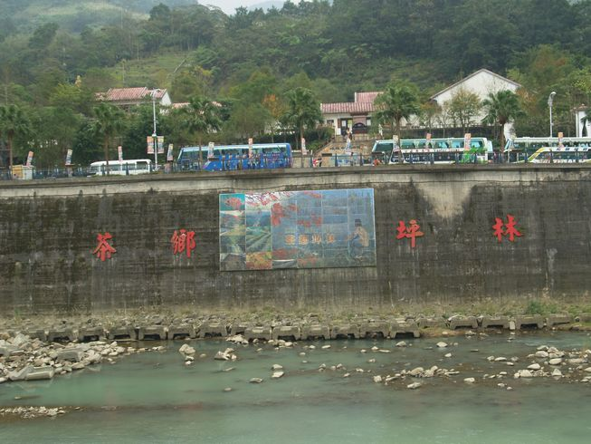
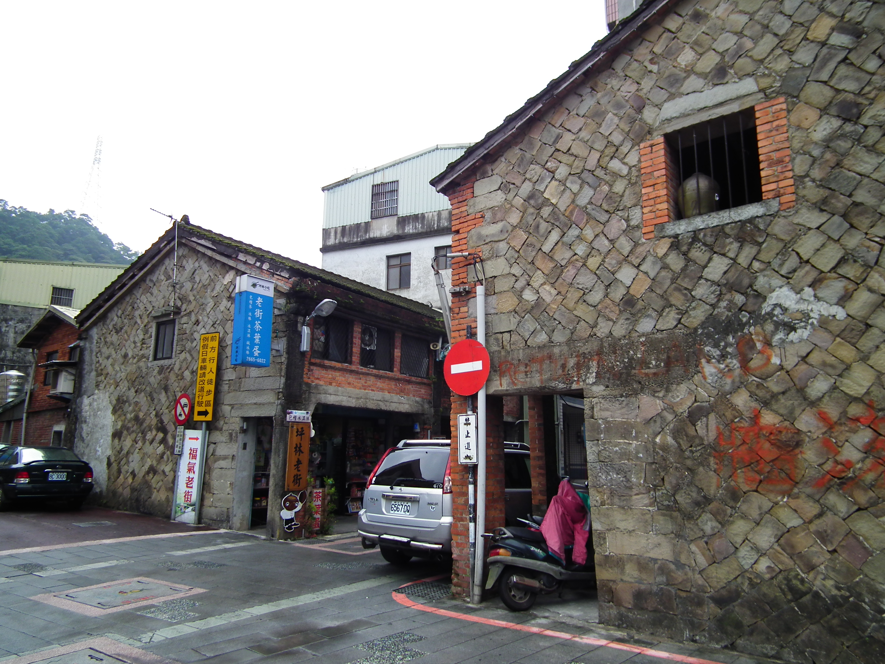
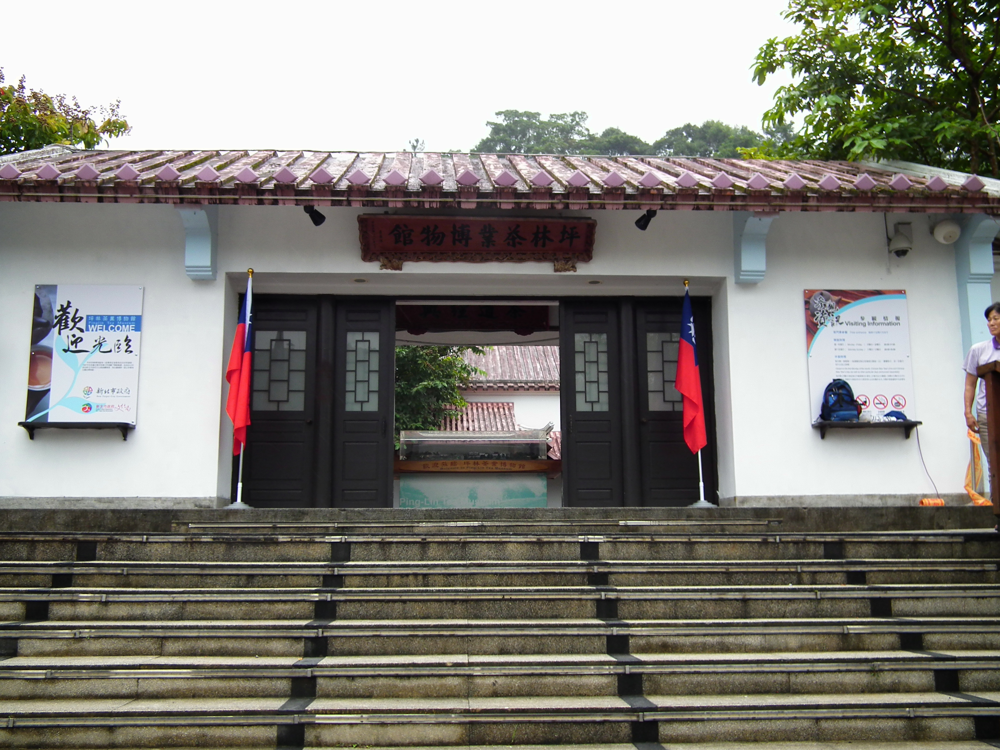
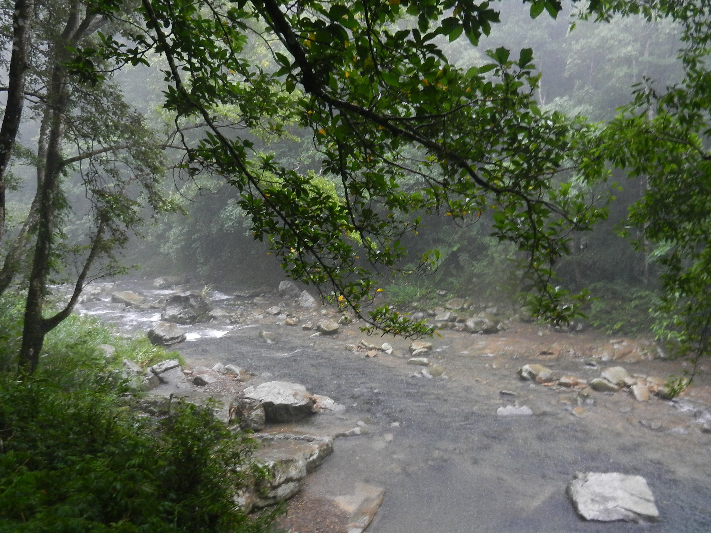
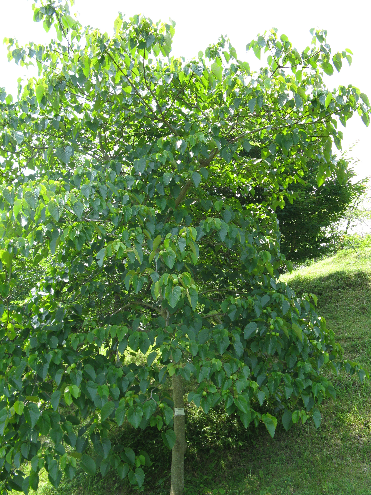

上午
茶業館起點
以典雅的茶業博物館為首站，在沈浸式美學空間中，認識包種茶與地方產業的核心歷史與傳承脈絡。
Pinglin Tea Valley
漫步於雲霧繚繞的綠意茶園，深吸一口屬於坪林的包種茶香。文山包種茶的製茶脈絡、坪林老街的溫潤街屋，以及北勢溪沿岸的慢活散步步調，共同交織出山城最靜好的時光。讓我們在春日出發，探尋茶香的發源地，重新尋回內心的平靜與從容。
上午
以典雅的茶業博物館為首站，在沈浸式美學空間中，認識包種茶與地方產業的核心歷史與傳承脈絡。
中午
轉進極富煙火氣的坪林老街，在砂岩街屋與百年石屋間慢行，品嚐特色茶便當與在地茶食，感受山城的慢調人情。
下午
漫步於清澈見底的北勢溪畔觀魚步道，享受微風拂面與成群銀魚閃爍，在水岸綠廊間完成心靈的悠閒轉場。
傍晚
若天候適宜，在暮色低垂時，步入無光害的觀魚步道，親眼目睹成千上萬金色螢光在樹梢與水畔翩翩起舞。
三大旅遊軸線
坪林的旅遊體驗可歸納為茶產業文化、老街人文聚落與北勢溪親水廊道三大軸線。掌握這三條主軸的特色與動線，有助於規劃出更具深度與節奏的坪林一日遊程。

茶香山城01
坪林最核心的靈魂印記非茶莫屬。沿著蜿蜒的北勢溪谷與茶青公路盤旋而上，迎接您的是滿山遍野的翠綠茶園與空氣中淡淡飄散的清新茶香。從山谷間層疊的茶褶、保留百年傳統手作製茶技藝的在地茶行，到全國唯一的茶業博物館，這條主線將帶領您親自見證包種茶從一片鮮綠葉片到一杯甘醇茶湯的奇妙旅程，最適合做為您開啟坪林慢旅的第一站，在裊裊茶香中沉澱都市的浮躁。

老街人文02
穿過熱鬧的現代街道，走進坪林老街，時間彷彿溫柔地慢了下來。這條散發著悠悠歲月光澤的古老街廓中，保留著當地獨有的砂岩老屋與精緻的閩南紅磚街屋。兩旁坐落著數十年如一日的傳統老茶行與充滿創意的文青茶空間。在這裡，您可以漫步石板路上，與親切的在地茶師圍坐品茗、話家常，品嚐茶香饅頭與創意豆腐冰淇淋，感受最純粹的茶鄉溫度。
 溪橋慢行
溪橋慢行
03
碧綠清透的北勢溪如一條翡翠絲帶，溫柔地抱著這座翠綠的山城。矗立於溪流之上的親水吊橋，擁有眺望澄澈水色與成群游魚的最佳視野。沿著水岸修築的平緩步道綠樹成蔭、空氣清甜，是最適合午後悠閒漫步的林蔭走廊。在這裡，您可以傾聽溪水的潺潺低吟與山林的蟲鳴鳥囀，順道探訪水畔的景觀茶坊，讓清新的微風帶走累積已久的緊繃與焦慮。
代表性景點
以下精選坪林地區最受旅人青睞的五個景點，依「館舍體驗」「人文街區」「親水步道」「山林健行」「季節花景」五大類型分別推薦，便於依個人偏好與停留時間安排遊程。

館舍起點這座閩南四合院風格的優雅建築，隱身於蓊鬱山林與北勢溪畔。館內不僅展示了坪林傳承百年的種茶工序與茶道歷史，更透過現代極簡美學與沈浸式展覽，將茶文化轉化為五感的當代饗宴。
非常適合作為旅程起點，在精緻典雅的東方美學空間中，建立對地方茶文化的脈絡理解。
環繞著當地信仰中心「保坪宮」展開的百年老街，處處保留著樸實溫潤的舊時光。這裡沒有過度的商業色彩，只有最日常的茶香人文、古老街屋與慢步調的茶鄉生活，讓人隨意駐足。
適合喜愛悠閒漫步、尋訪石屋建築紋理，以及品嚐在地特色茶點與茶便當的慢遊者。
溪畔散步
這是一條與北勢溪溫柔並行的親水走廊。由於當地護魚政策成果斐然，清澈見底的溪水中隨處可見成群游魚在陽光下閃耀銀白光芒。漫步於平緩舒適的棧道上，能近距離感受溪谷的清涼與舒暢。
步道坡度極為平緩，非常適合全家大小攜手共遊，用最從容的步伐洗滌身心。

溪谷山林這是一處隱身於溪谷深處的綠色秘境，因擁有極為茂密多樣的史前蕨類地景而聞名。步道沿著潺潺清溪而建，沿途被無盡的翠綠植被遮蔭，空氣濕潤清新，彷彿走進宮崎駿筆下的森林世界。
適合喜愛溪谷健行、大自然攝影，想尋求一場深度芬多精洗禮的生態愛好者。

五月花季每年四、五月春夏之交，步道兩側茂密的油桐樹梢便會綻放出如瑞雪般的白花。隨風飄落的白透花瓣鋪滿了古老的木棧道，與周邊的青綠茶園交映成趣，是季節限定的極致浪漫地景。
適合春末夏初造訪，是喜愛山林花毯、人像外拍與自然花卉攝影者的夢幻造訪期。
本頁景點資訊僅供行程規劃參考，各景點開放時段、票價與活動安排可能因季節或現場狀況調整，實際資訊請以現場公告為準。最新官方公告請參閱 新北市坪林區公所 網站。
四季遊程建議
坪林四季各有不同的自然景致與體驗主題：春季品嚐頭春包種茶、初夏追逐油桐花飛雪、盛夏漫步清涼溪畔步道、秋冬靜賞山谷雲霧。以下依時序推薦適合的遊程方向，協助您挑選最佳造訪時機。
春
春季是坪林包種茶的黃金採製期，茶園嫩芽初綻、空氣中瀰漫著清新草青香。建議先至坪林茶業博物館認識製茶工序與產業歷史，再轉往老街茶行品飲當季頭春包種茶，從產地到杯中完整感受茶鄉的核心魅力。
✨ 最佳造訪：3 月中旬至 5 月（春茶產季）
夏
每年四至五月春夏之交，坪林山區的油桐樹梢盛開如雪般的潔白花朵，飄落的花瓣鋪滿步道與茶園小徑，形成獨特的「五月雪」地景。水柳腳步道與金瓜寮溪沿線為主要觀賞區域，花期約持續三至四週，適合安排半日賞花健行。
🌸 最佳造訪：4 月中旬至 5 月下旬（油桐花季）
溪岸消暑
暑
盛夏時節，坪林溪谷的水溫與林蔭可有效降低體感溫度，是雙北地區熱門的天然避暑選擇。建議沿觀魚步道漫步北勢溪畔，欣賞護魚成果下的大量溪魚生態，午後可至溪畔景觀咖啡廳歇息，品嚐當地特色的冷泡包種茶。
☀️ 最佳造訪：6 月至 8 月（避暑消暫）
冬
秋冬季節，坪林山谷經常出現低海拔雲霧繚繞的壯麗景觀，層疊的茶園在晨霧中若隱若現，宛如流動的水墨畫卷。此時也是品嚐冬茶與蜜香紅茶的理想時節，在寧靜的茶園山景中，體會山城獨有的沉靜氛圍。
☁️ 最佳造訪：11 月至翌年 2 月（雲霧茶園季）